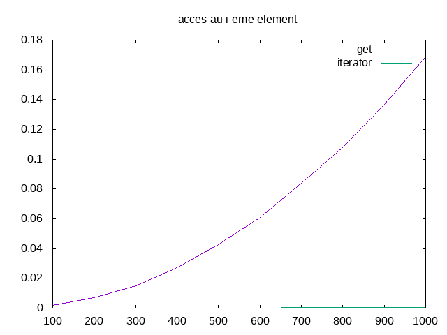

tp-iterateurs¶
Etat du TP¶
SALMI Badr-eddine TARMELIT Lydia
Réponses aux questions¶
Question 3.2.4.1¶
L’élement supprimé est le dernier renvoyer par next c’est a dire l’élement précedant l’itérateur apres il sera le prev et le next
Question 3.2.4.3¶
On interdit l’appel à deux remove successifs sans next entre deux parceque on risque de supprimer head of the list ce qui est interdit Question 3.2.4.4 ————-
Pour supprimer tout les élements :
- while iterateur.next() :
iterateur.remove()
autant de fois qu’il y a d’élements dans la liste on suprime l’element
Question 3.2.5.3¶
On remarque qu’en utilisant get, le temps d’accés à tout les élements d’une liste augmente de manière exponentielle par rapport au nombre d’élements, alors que l’accès en utilisant uniquement l’itérateur demande un négligeable. Il est donc plus efficace d’accéder aux élements en utilisant l’itérateur